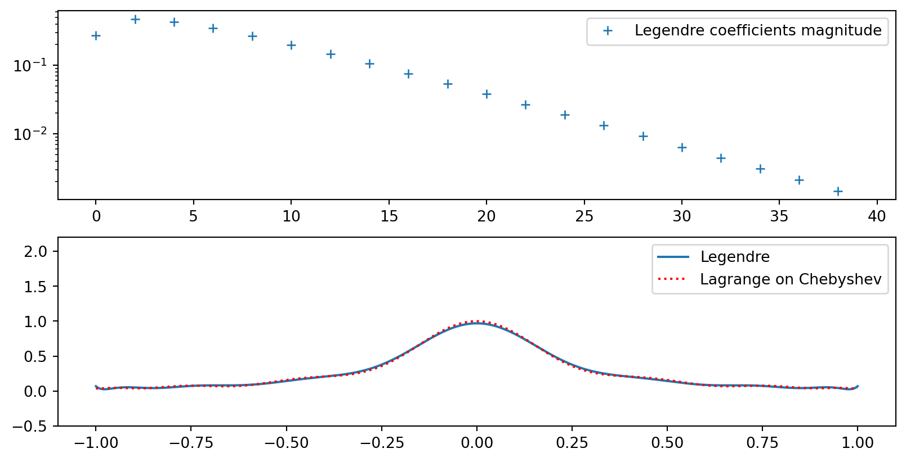

Function approximation with global functions
MATMEK-4270
Prof. Mikael Mortensen, University of Oslo
Important topics of todays lecture
- Approximation of smooth functions \(u(x)\) using global basis functions
- Variational methods
- The least squares method
- The Galerkin method
- The collocation method
- Runge’s phenomenon
- Legendre polynomials
- Spectral convergence
Function approximation with global functions
Consider a generic function
\[ u(x), \quad x \in [a, b], \]
where \(u(x)\) can by anything, like \(u(x)=\exp(\sin(2\pi x))\), \(u(x) = x^x\), etc., etc.
We want to find an approximation to \(u(x)\) using
\[ u(x) \approx u_N(x) = \sum_{k=0}^N \hat{u}_k \psi_k(x) \]
where \(\psi_k(x)\) is a global basis function defined on the entire domain \([a, b]\).
In the approximation
\[ u_N(x) = \sum_{k=0}^N \hat{u}_k \psi_k(x) \tag{1} \]
- \(\psi_k(x)\) is a basis function
- \(\{\psi_k\}_{k=0}^N\) is a basis
- \(\{\hat{u}_k\}_{k=0}^N\) are expansion coefficients (the unknowns)
- \(V_N = \text{span}\{\psi_k\}_{k=0}^N\) is a function space (which is a vector space)
For example, \(V_N = \text{span}\{x^k\}_{k=0}^N\) is the space of all polynomials of order less than or equal to \(N\). (More commonly referred to as \(\mathbb{P}_N\))
If we say that \(u_N \in V_N\), then we mean that \(u_N\) can be written as \((1)\) and that \(u_N\) is a vector in the vector space (or function space) \(V_N\).
Example: \(u(x) = 10(x-1)^2-1\) for \(x\in [1,2]\)
Let \(V_N = \{1, x\}\) be the space of all straight lines.
What is the best approximation \(u_N \in V_N\) to the function \(u(x)\)?
How do we decide what is best? All we know is that
\[ u_N(x) = \hat{u}_0 + \hat{u}_1 x. \]
How to find the best \(\{\hat{u}_0, \hat{u}_1\}\)?
How to find the best approximation?
What options are there? Who decides what is best?
The three methods covered in this class are
- The least squares method
- The Galerkin method
- The collocation method
The first two are variational methods, whereas the third is an interpolation method.
Each method will give us \(N+1\) equations for the \(N+1\) unknowns \(\{\hat{u}_k\}_{k=0}^N\)!
- A variational method derives equations by using integration over the domain
- A collocation method derives equations at different points in the mesh
Variational methods
Since a variational method derives equations by integrating over the domain, we need to define a special notation. The \(L^2\) inner product is defined as
\[ \left(f, g \right) = \int_{\Omega} f(x)g(x) d\Omega, \]
for two real functions \(f(x)\) and \(g(x)\) (complex functions have a slightly different inner product). The symbol \(\Omega\) here represents the domain of interest. For our first example \(\Omega = [1, 2]\).
Note
Sometimes the inner product is written as \(\left(f, g \right)_{L^2(\Omega)}\), in order to clarify that it is the \(L^2\) inner product on a certain domain. Normally, the \(L^2(\Omega)\) subscript will be dropped.
The \(\small L^2(\Omega)\) norm
The inner product is used to define an \(L^2(\Omega)\) norm
\[ \|u\| = \sqrt{(u, u)} \]
The norm gives us a measure for the length or size of a vector.
The \(\small L^2(\Omega)\) error norm
If we define the pointwise error as
\[ e(x) = u(x) - u_N(x) \]
then the \(L^2(\Omega)\) error norm
\[ \| e \| = \sqrt{(e, e)} = \sqrt{\int_{\Omega} e^2 dx} \]
gives us a measure of the error over the entire domain
Back to our example - how do we find the best possible \(u_N \approx u\)?
If we use the error
\[ e(x) = u(x) - u_N(x) \]
then the \(L^2\) error norm \(\|e\|\) represents the error integrated over the entire domain.
Idea!
Why don’t we find \(u_N\) such that it minimizes the \(L^2\) error norm!
\(\longrightarrow\) The Least squares method!
The least squares method for function approximation
We want to approximate
\[ u_N(x) \approx u(x) \]
using a function space \(V_N\) for \(u_N\). The pointwise error in \(u_N\) is defined as
\[ e(x) = u(x) - u_N(x) \]
Define the square of the \(L^2\) error norm
\[ E = \| e\|^2 = (e, e) \]
The least squares method is to find \(u_N \in V_N\) such that
\[ \frac{\partial E}{\partial \hat{u}_j} = 0, \quad j=0, 1, \ldots, N. \]
The least squares method
Find \(u_N \in V_N\) such that
\[ \frac{\partial E}{\partial \hat{u}_j} = 0, \quad j=0, 1, \ldots, N \]
This gives us \(N+1\) equations for \(N+1\) unknowns \(\{\hat{u}_j\}_{j=0}^N\).
But how can we compute \(\frac{\partial E}{\partial \hat{u}_j}\)?
\[ \frac{\partial E}{ \partial \hat{u}_j} = \frac{\partial }{\partial \hat{u}_j} \int_{\Omega} e^2 dx = \int_{\Omega} 2e \frac{\partial e}{\partial \hat{u}_j}dx \]
Insert for \(e(x)=u(x)-u_N(x)=u(x)-\sum_{k=0}^N \hat{u}_k \psi_k\)
\[ \frac{\partial E}{ \partial \hat{u}_j} = \int 2\left( u-\sum_{k=0}^N \hat{u}_k \psi_k \right) \overbrace{\frac{\partial}{\partial \hat{u}_j} \left(u - \sum_{k=0}^N \hat{u}_k \psi_k \right)}^{-\psi_j} dx \]
If we now set \(\small\frac{\partial E}{ \partial \hat{u}_j}=0\), then
\[ \frac{\partial E}{ \partial \hat{u}_j} = -\int 2\left( u-\sum_{k=0}^N \hat{u}_k \psi_k \right) \psi_j dx = 0 \]
\[ \longrightarrow \int u \psi_j dx = \sum_{k=0}^N\int \psi_k \psi_j dx \hat{u}_k, \quad j=0,1, \ldots, N \]
gives us \(N+1\) linear equations for the \(N+1\) unknown \(\{\hat{u}_k\}_{k=0}^N\)
Back to the example: \(u(x) = 10(x-1)^2-1\) for \(x\in [1, 2]\)
Find \(u_N \in \mathbb{P}_1\) (meaning find \(\hat{u}_0\) and \(\hat{u}_1\)) such that
\[ \frac{\partial E}{\partial \hat{u}_0}=0 \text{ and } \frac{\partial E}{\partial \hat{u}_1}=0 \]
Two equations for two unknowns.
Implement the 2 equations in Sympy
def inner(u, v, domain=(-1, 1), x=x):
return sp.integrate(u*v, (x, domain[0], domain[1]))
u0, u1 = sp.symbols('u0,u1')
err = u-(u0+u1*x)
E = inner(err, err, (1, 2))
eq1 = sp.Eq(sp.diff(E, u0, 1), 0)
eq2 = sp.Eq(sp.diff(E, u1, 1), 0)
display(eq1)
display(eq2)\(\displaystyle 2 u_{0} + 3 u_{1} - \frac{14}{3} = 0\)
\(\displaystyle 3 u_{0} + \frac{14 u_{1}}{3} - \frac{26}{3} = 0\)
Linear algebra approach
\[ \underbrace{\int u \psi_j dx}_{b_j} = \sum_{k=0}^N \underbrace{\int \psi_k \psi_j dx}_{a_{jk}} \underbrace{\hat{u}_k}_{x_k}, \quad j=0,1, \ldots, N. \] \[ \boldsymbol{b} = A \boldsymbol{x} \longrightarrow \boldsymbol{x} = A^{-1} \boldsymbol{b} \]
Assemble mass matrix \(a_{jk}=\int \psi_k \psi_j dx\) and vector \(b_j = \int u \psi_j dx\)
A = sp.zeros(2, 2)
b = sp.zeros(2, 1)
psi = (sp.S(1), x)
u = 10*(x-1)**2-1
for i in range(2):
for j in range(2):
A[i, j] = sp.integrate(psi[i]*psi[j], (x, 1, 2))
b[i] = sp.integrate(psi[i]*u, (x, 1, 2))
print(A)
print(A**(-1) @ b)Matrix([[1, 3/2], [3/2, 7/3]])
Matrix([[-38/3], [10]])Same result as before!
The Galerkin method is a more popular variational method for solving differential equations
Here the error is required to be orthogonal to the basis functions (for the \(L^2\) inner product)
\[ (e, \psi_j) = 0, \quad j = 0, 1, \ldots, N. \]
Again \(N+1\) equations for \(N+1\) unknowns.
Not as much work as the least squares method, and even easier to implement in Sympy:
The Galerkin formulation of the problem is
Find \(u_N \in V_N\) such that
\[ (e, v) = 0, \quad \forall \, v \in V_N \]
Here \(v\) is often referred to as a test function, whereas \(u_N\) is referred to as a trial function.
Alternative formulation:
Find \(u_N \in V_N\) such that
\[ (e, \psi_j) = 0, \quad j = 0, 1, \ldots, N. \]
Note
In order to satisfy \((e, v)=0\) for all \(v \in V_N\), we can insert for \(v=\sum_{j=0}^N\hat{v}_j \psi_j\) such that
\[ \sum_{j=0}^N (e, \psi_j) \hat{v}_j =0. \] In order for this to always be satisfied, we require that \((e, \psi_j)=0\) for all \(j=0,1,\ldots, N\).
Linear algebra problem for the Galerkin method
We have the \(N+1\) equations
\[ (e, \psi_i) = 0, \quad i = 0, 1, \ldots, N. \]
Insert for \(e=u-u_N=u-\sum_{j=0}^N \hat{u}_j \psi_j\) to get
\[ (u - \sum_{j=0}^N \hat{u}_j \psi_j, \psi_i) = 0, \quad i =0, 1, \ldots, N \]
and thus the linear algebra problem \(A \boldsymbol{x} = \boldsymbol{b}\):
\[ \sum_{j=0}^N \underbrace{(\psi_j, \psi_i)}_{a_{ij}} \, \underbrace{\hat{u}_j}_{x_j} = \underbrace{(u, \psi_i)}_{b_i}, \quad i=0, 1, \ldots, N \]
Orthogonality is a big deal!
If we choose basis \(\{\psi_j\}_{j=0}^N\) such that all basis functions are orthonormal, then
\[ a_{ij} = (\psi_j, \psi_i) = \delta_{ij} = \begin{cases} 1 \text{ if } i = j, \\ 0 \text{ if } i \ne j. \end{cases} \]
and thus
\[ A\boldsymbol{x} = \boldsymbol{b} \rightarrow \boldsymbol{x} = \boldsymbol{b} \quad \text{or} \quad \hat{u}_j = (u, \psi_j), \quad j=0, 1, \ldots, N \]
If the basis functions are merely orthogonal, then
\[ (\psi_j, \psi_i) = \|\psi_i\|^2 \delta_{ij}, \]
where \(\|\psi_i\|^2\) is the squared \(L^2\) norm of \(\psi_i\). We can still easily solve the linear algebra system (because \(A\) is a diagonal matrix)
\[ \hat{u}_i = \frac{(u, \psi_i)}{\|\psi_i\|^2} \quad \text{for } i=0, 1, \ldots, N \]
Polynomial basis functions
The monomial basis
\[ \{x^n \}_{n=0}^N, \]
is a basis for \(\mathbb{P}_N\). However, it is not a good basis. This is because the basis functions are not orthogonal and the mass matrix \(A\) is ill conditioned. In short, this means it is difficult to solve \(A\boldsymbol{x}=\boldsymbol{b}\) with good accuracy using finite precision computers.
The basis functions are shown below for \(x\in [-1, 1]\)

Legendre polynomials are much better basis functions
Legendre polynomials are defined on the domain \(\Omega = [-1, 1]\) as the recursion
\[ \small \begin{align*} P_0(x) &= 1, \\ P_1(x) &= x, \\ P_2(x) &= \frac{1}{2}(3x^2-1), \\ &\vdots \\ (j+1)P_{j+1}(x) &= (2j+1)xP_{j}(x) - j P_{j-1}(x). \end{align*} \]
The first 5 Legendre polynomials are plotted on the right
The Legendre polynomials are \(L^2\) orthogonal on the reference domain \(\Omega=[-1, 1]\)
\[ (P_j, P_i)_{L^2(-1, 1)} = \frac{2}{2j+1}\delta_{ij}. \]
Orthogonality in the \(L^2\) inner product space makes the Legendre polynomials very popular!
Using \(\|P_j\|^2 = \frac{2}{2j+1}\) we get that
\[ \hat{u}_j = \frac{(u, P_j)}{\|P_j\|^2} = \frac{2j+1}{2}(u, P_j) \]
Note
This requires that the domain of \(u(x)\) is \([-1, 1]\)
If the physical domain \([a, b]\) is different from the reference domain \([-1, 1]\), then we need to map
Many well-known basis functions work only on a given reference domain
- Sines and cosines \([0, \pi]\)
- Legendre polynomials \([-1, 1]\)
- Bernstein polynomials \([0, 1]\)
- Chebyshev polynomials \([-1, 1]\)
Let \(X\) be the coordinate in the computational (reference) domain \([A, B]\) and \(x\) be the coordinate in the true physical domain \([a, b]\). A linear (affine) mapping, from \(X\) to \(x\) (and back) is then
\[ X \in [A, B] \quad \text{and} \quad x \in [a, b] \]
\[ x = a + \frac{b-a}{B-A}(X-A) \quad \text{and} \quad X = A + \frac{B-A}{b-a}(x-a) \]
Affine map
- Equations are defined in the real domain \([a, b]\)
- Equations are solved in the computational domain \([A, B]\)
The mapping makes it possible to use Legendre polynomials in any domain \([a, b]\)
The basis functions \(\psi_j(x)\) are simply
\[ \psi_j(x) = P_j(X(x)) \quad X \in [-1, 1], \quad x \in [a, b] \]
\[ X(x) = -1 + \frac{2}{b-a}(x-a) \]
xj = np.linspace(1, 2, 100)
A, B = -1, 1
a, b = 1, 2
Xj = -1 + (B-A)/(b-a)*(xj-a)
plt.figure(figsize=(6, 3.5))
legend = []
p = np.zeros(100)
for n in range(5):
l = sp.legendre(n, x)
p[:] = sp.lambdify(x, l)(Xj)
plt.plot(xj, p)
legend.append(f'$P_{n}(X(x))$')
plt.title(r'$\psi_j(x)=P_j(X(x))$')
plt.xlabel('x')
plt.legend(legend);The mapping complicates the inner product
The Galerkin method is defined on the true domain using \(L^2([a, b])\)
\[ (u(x) - u_N(x), \psi_j(x))_{L^2([a,b])}= \int_{a}^b (u(x)-u_N(x)) \psi_j(x) dx = 0, \quad j=0,1,\ldots, N. \]
Insert for \(u_N = \sum_{k=0}^N \hat{u}_k \psi_k(x)\) and rearrange
\[ \sum_{k=0}^N \int_{a}^b \psi_k(x) \psi_j(x) \, dx \, \hat{u}_k = \int_{a}^b u(x) \psi_j(x) dx, \quad j = 0, 1, \ldots, N. \]
So far just regular Galerkin.
Now introduce \(\psi_j(x) = P_j(X(x))\) and integrate with a change of variables \(x\rightarrow X\). The new integration limits are then \(X(a)=-1\) and \(X(b)=1\)
\[ \sum_{j=0}^N \int_{-1}^1 P_k(X) P_j(X)\, \cancel{\frac{dx}{dX}} \, dX \, \hat{u}_k = \int_{-1}^1 u(x(X)) P_j(X) \, \cancel{\frac{dx}{dX}} \, dX, \quad j=0, 1, \ldots, N \]
We get the linear system with inner products over the reference domain
\[ \sum_{j=0}^N \int_{-1}^1 P_k(X) P_j(X) \, dX \, \hat{u}_k = \int_{-1}^1 u(x(X)) P_j(X) \, dX, \quad j=0, 1, \ldots, N \]
which can be written as
\[ \sum_{k=0}^N \underbrace{(P_k(X), P_j(X))_{L^2(-1, 1)}}_{\frac{2}{2j+1} \delta_{kj}} \, \hat{u}_k = (u(x(X)), P_j(X))_{L^2(-1, 1)} \]
such that
\[ \hat{u}_j = \frac{2j+1}{2} \left( u(x(X)), P_j(X) \right)_{L^2(-1, 1)} \quad j=0, 1, \ldots, N \]
Implementation of the mapped inner product
The following inner product is valid for any mapping
For example, for our \(u(x)=10(x-1)^2-1\) in the domain \(\Omega = [a, b] = [1, 2]\) we get
uhat = lambda u, j: (2*j+1) * inner(u, sp.legendre(j, x), (1, 2))/2
u = 10*(x-1)**2-1
u0, u1 = uhat(u, 0), uhat(u, 1)
print(u0, u1)
print(f"uN(x) = {u0}+{u1}X(x)")7/3 5
uN(x) = 7/3+5X(x)The Legendre polynomials use the reference coordinate \(X\), whereas the true function \(u_N(x)\) is a function of \(x\) from the true space.
Note
The inner product implemented here is using Sympy’s integrate function, which may be too slow or not find the solution at all. It is normally better to use scipy.integrate.quad
Plot the Legendre approximation
plt.figure(figsize=(4, 3))
xj = np.linspace(1, 2, 100)
Xj = -1 + 2/(b-a)*(xj-a)
plt.plot(xj, sp.lambdify(x, u)(xj))
plt.plot(xj, uhat(u, 0) + uhat(u, 1)*Xj, 'r:')
plt.legend(['$10(x-1)^2-1$', f'{uhat(u, 0)} + {uhat(u, 1)}X(x)']);The result is exactly the same as was found with the monomial basis \(\{1, x\}\).
Tip
Numpy has a complete module dedicated to Legendre polynomials
Summary of variational methods
We want to approximate \(u(x)\) with \(u_N(x) \in V_N\)
\[ u_N(x) \approx u(x) \]
using the inner product
\[ (f, g) = \int_a^b f(x)g(x)dx \]
Least squares method
Find \(u_N \in V_N\) such that
\[ \frac{\partial E}{\partial \hat{u}_j} = 0, \quad j=0,1,\ldots, N \]
where \(E=(u-u_N, u-u_N)\).
Minimizing the \(L^2\) error norm.
Galerkin method
Find \(u_N \in V_N\) such that
\[ (u-u_N, v) = 0, \quad \forall \, v \in V_N \]
Or equivalently
\[ (u-u_N, \psi_j) = 0, \quad j=0,1,\ldots, N \]
Error orthogonal to the test functions
The collocation method
Takes a very different approach than the variational methods, but the objective is still to find \(u_N \in V_N\) such that
\[ u_N(x) = \sum_{j=0}^N \hat{u}_j \psi_j(x) \]
The collocation method requires that for some \(N+1\) chosen mesh points \(\{x_j\}_{j=0}^N\) the following \(N+1\) equations are satisfied
\[ u(x_i) - u_N(x_i) = 0, \quad i = 0, 1, \ldots, N. \]
Inserting for \(u_N(x_i)\) we get the \(N+1\) linear algebra equations
\[ \sum_{j=0}^N \hat{u}_j \underbrace{\psi_{j}(x_i)}_{a_{ij}} = u(x_i) \longrightarrow \sum_{j=0}^N a_{ij} \hat{u}_j = u(x_i), \quad i=0, 1, \ldots, N \]
The Lagrange interpolation method described in lecture 7 is a collocation method
The Lagrange basis functions \(\ell_j(x)\) are defined for points \(\{x_j\}_{j=0}^N\) such that
\[ \small \ell_j(x) = \prod_{\substack{0 \le m \le N \\ m \ne j}} \frac{x-x_m}{x_j-x_m} \quad \text{and} \quad \ell_j(x_i) = \delta_{ij} = \begin{cases} 1 \quad &\text{for } i=j \\ 0 \quad &\text{for } i\ne j \end{cases} \]
Hence the matrix \(a_{ij}= \psi_j(x_i)=\delta_{ij}\) and we can simply use the coefficients
\[ \small \hat{u}_j = u(x_j) \quad \text{such that}\quad u_N(x)=\sum_{j=0}^Nu(x_j) \ell_j(x) \]
There is no integration and the method is often favored for its simplicity. There is a problem though. How do you choose the collocation points?!
Note
The Lagrange polynomial here is using all \(N+1\) mesh points. This is different from lecture 7, where we only used a few mesh points close to the interpolation point.
Lagrange collocation method for \(u(x)=10(x-1)^2-1, x\in[1,2]\)
The approximation using two collocation points (linear function, \(u_N \in V_N=\text{span}\{1, x\}\)) is
\[ u_N(x) = \hat{u}_0 \ell_0(x) + \hat{u}_1 \ell_1(x), \]
or more simply
\[ u_N(x) = u(x_0) \ell_0(x) + u(x_1) \ell_1(x). \]
We can choose the end points \(x_0=1\) and \(x_1=2\) and reuse the two functions Lagrangebasis and Lagrangefunction from lecture 7. The result is then as shown on the next slide
Collocation
from lagrange import Lagrangebasis, Lagrangefunction
xj = np.linspace(1, 2, 100)
u = 10*(x-1)**2-1
xp = np.array([1, 2])
ell = Lagrangebasis(xp)
L = Lagrangefunction([u.subs(x, xi) for xi in xp], ell)
plt.figure(figsize=(5, 3))
plt.plot(xj, sp.lambdify(x, u)(xj), 'b')
plt.plot(xj, sp.lambdify(x, L)(xj), 'r:')
plt.plot(xp, [u.subs(x, xi) for xi in xp], 'bo')
plt.legend(['$u(x)$', '$u_N(x), (x_0=1, x_1=2)$']);Use three points and the approximation is perfect because \(u(x)\) is a 2nd order polynomial
xp = np.array([1, 1.5, 2])
ell = Lagrangebasis(xp)
L = Lagrangefunction([u.subs(x, xi) for xi in xp], ell)
plt.figure(figsize=(5, 3))
plt.plot(xj, sp.lambdify(x, u)(xj), 'b')
plt.plot(xj, sp.lambdify(x, L)(xj), 'r:')
plt.plot(xp, [u.subs(x, xi) for xi in xp], 'bo')
plt.legend(['$u(x)$', '$(x_0, x_1, x_2) = (1, 1.5, 2)$']);High order interpolation on uniform grids is bad
Lets consider a more difficult function
\[ u(x) = \frac{1}{1+25x^2}, \quad x \in [-1, 1], \]
and attempt to approximate it with Lagrange polynomials on a uniform grid.
Use
\[\begin{align} N &= 15 \\ x_i &= -1 + \frac{2i}{N}, \quad i=0, 1, \ldots, N \\ u(x_i) &= u_N(x_i) = \sum_{j=0}^N u(x_j) \ell_j(x_i), \quad i=0, 1, \ldots, N \end{align}\]
Implementation
u = 1/(1+25*x**2)
N = 15
xj = np.linspace(-1, 1, N+1)
uj = sp.lambdify(x, u)(xj)
ell = Lagrangebasis(xj)
L = Lagrangefunction(uj, ell)
yj = np.linspace(-1, 1, 1000)
plt.figure(figsize=(6, 4))
plt.plot(xj, uj, 'bo')
plt.plot(yj, sp.lambdify(x, u)(yj))
plt.plot(yj, sp.lambdify(x, L)(yj), 'r:')
ax = plt.gca()
ax.set_ylim(-0.5, 2.2);
Large over and undershoots in the approximation Lagrange polynomial!
Runge’s phenomenon! Interpolation on uniform grids may lead to large over and undershoots.
Why?
Runge’s phenomenon
Define the monic polynomial with roots in \(\{x_j\}_{j=0}^N\) as
\[ p_N(x) = \prod_{j=0}^N (x-x_j) \]
It can be shown that the error in the Lagrange polynomial \(u_N(x)\) using \(\{x_j\}_{j=0}^N\) is
\[ u(x)-u_N(x)=\frac{u^{(N)}(\xi)}{(N+1)!}p_N(x) \]
for some \(\xi \in [a, b]\).
Hence, large errors occur when \(p_N(x)\) is large or \(u^{(N)}(\xi) = \frac{d^N u}{dx^N}(\xi)\) is large.
Lets look at \(p_N(x)\), which is independent of the function \(u(x)\)!
The monic \(p_N(x)\) can be created for any mesh
Lets use both a uniform mesh and Chebyshev points:
\[ x_j = -1 + \frac{2j}{N} \quad \text{and} \quad x_j = \cos(j \pi / N), \quad j=0, 1, \ldots, N \]
We see that Chebyshev points are clustered near the edges
Lets construct \(p_N(x)\) using either the uniform mesh or Chebyshev nodes..
Plot the monic polynomial \(\small p_N(x)=\prod_{j=0}^N (x-x_j)\) at uniform and Chebyshev mesh
xp = np.linspace(-1, 1, N+1); xc = np.cos(np.arange(N+1)*np.pi/N)
pp = np.poly(xp); pc = np.poly(xc)
xj = np.linspace(-1, 1, 1000)
fig, (ax1, ax2) = plt.subplots(1, 2, figsize=(12, 3))
ax1.plot(xj, np.polyval(pp, xj)); ax2.plot(xj, np.polyval(pc, xj))
ax1.plot(xp, np.zeros(N+1), 'bo'); ax2.plot(xc, np.zeros(N+1), 'bo')
ax1.set_title('Uniform grid'); ax2.set_title('Chebyshev grid');- A uniform mesh leads to large oscillations near the edges, whereas Chebyshev points leads to a polynomial with near uniform oscillations.
- The oscillations on the uniform mesh grow even larger when increasing \(N\).
Compute the Lagrange polynomial using Chebyshev points
Only small oscillations - interpolation is converging using more points!
The variational method and \(\small u(x)=\frac{1}{1+25x^2}\)
Lets try Legendre polynomials. There is no need for mapping since the domain is \([-1, 1]\). And there are no mesh points! The Legendre coefficients are
\[ \hat{u}_j = \frac{2j+1}{2}(u, P_j), \quad j=0, 1, ... \]
# Use scipy to compute integral
from numpy.polynomial import Legendre
from scipy.integrate import quad
def innern(u, v):
uj = lambda xj: sp.lambdify(x, u)(xj)*v(xj)
return quad(uj, -1, 1)[0]
u = 1/(1+25*x**2)
uhat = lambda u, j: (2*j+1) * innern(u, Legendre.basis(j))/2
ul = [uhat(u, n) for n in range(40)]
xj = np.linspace(-1, 1, 1000)
uj = sp.lambdify(x, u)(xj)
fig, (ax1, ax2) = plt.subplots(2, 1)
ax1.semilogy(abs(np.array(ul)), '+')
ax2.plot(xj, Legendre(ul[:17])(xj))
ax2.plot(yj, sp.lambdify(x, L)(yj), 'r:')
ax2.set_ylim(-0.5, 2.2);
ax1.legend(['Legendre coefficients magnitude'])
ax2.legend(['Legendre', 'Lagrange on Chebyshev'])
Error in Legendre approximations
The smooth function \(u(x)\) can be exactly represented as
\[ u(x) = \sum_{k=0}^{\infty} \hat{u}_k P_k(x) \]
For all \(k \le N\) the series for \(u(x)\) and the series for \(u_N(x)\) have exactly the same coefficients \(\hat{u}_k\). Hence the error in the approximation \(u_N\) is easily computed as
\[ e(x) = u(x) - u_N(x) = \sum_{k=N+1}^{\infty} \hat{u}_k P_k(x) \]
Spectral convergence - it can be shown that
\[ \| u - u_N\| \sim | \hat{u}_{N+1}| \sim e^{-\mu N}, \quad \mu \in \mathbb{R}^+ \]
Exponential convergence!
An example of spectral (exponential) convergence
Lets appriximate the smooth function
\[ u = e^{\cos(x)}, \quad x \in [-1, 1] \]
and monitor the \(L^2\) error as we increase \(N\).
def L2_error(uh, ue):
uej = sp.lambdify(x, ue)
err = []
for n in range(0, 40, 2):
uf = lambda xj: (Legendre(uh[:(n+1)])(xj)
-uej(xj))**2
err.append(np.sqrt(quad(uf, -1, 1)[0]))
return err
u = sp.exp(sp.cos(x))
# Compute Legendre coefficients
uh = [uhat(u, n) for n in range(0, 40)]
plt.figure(figsize=(6, 3))
plt.loglog(np.arange(0, 40, 2), L2_error(uh, u), 'ko')
plt.title('$L^2 error$');plt.xlabel('N');- Exponentially fast convergence rate!
- Error does not go down further due to machine precision.
Boundary issues
Lets consider a slightly different problem
\[ u(x) = 10(x-1)^2 -1, \quad x \in [0, 1] \]
and attempt to find \(u_N \in V_N = \text{span}\{\sin((j+1)\pi x)\}_{j=0}^N\) with the Galerkin method.
The sines are orthogonal such that the mass matrix becomes diagonal
\[ \int_0^1 \sin((j+1) \pi x) \sin((i + 1) \pi x) dx = \frac{1}{2} \delta_{ij}. \]
Hence we can easily get the coefficients with the Galerkin method
\[ \hat{u}_i = 2 \left( u(x), \sin((i+1) \pi x) \right)_{L^2(0, 1)}. \]
Implementation
u = 10*(x-1)**2-1
uhat = lambda u, i: 2*inner(u, sp.sin((i+1)*sp.pi*x), (0, 1), (0, 1))
ul = []
for i in range(15):
ul.append(uhat(u, i).n())
ul = np.array(ul, dtype=float)
def uN(uh, xj):
N = len(xj)
uj = np.zeros(N)
for i, ui in enumerate(uh):
uj[:] += ui*np.sin((i+1)*np.pi*xj)
return uj
xj = np.linspace(0, 1, 100)
plt.figure(figsize=(6,4))
plt.plot(xj, 10*(xj-1)**2-1, 'b')
plt.plot(xj, uN(ul[:(3+1)], xj), 'g:')
plt.plot(xj, uN(ul[:(12+1)], xj), 'r-')
plt.legend(['$u(x)$', 'N=3', 'N=12']);What is wrong?
All basis functions are zero at the domain boundaries! And as such
\[ u_N(0)=u_N(1)=0 \]
Solution, add a boundary function with nonzero boundary values
\[ u_N(x) = B(x) + \tilde{u}_N(x) = B(x) + \sum_{j=0}^N \hat{u}_j \sin((j+1) \pi x), \]
and use \(\tilde{u}_N\in V_N\) with homogeneous boundary values. \(B(x)\) can be
\[ B(x) = u(1)x + u(0)(1-x) \]
such that
\[ u_N(0)=B(0)=u(0) \quad \text{and} \quad u_N(1)=B(1)=u(1) \]
The variational problem becomes: Find \(\tilde{u}_N \in V_N\) such that
\[ (B + \tilde{u}_N - u, v) = 0 \quad \forall \, v \in V_N \]
Sines with boundary values
Find \(\tilde{u}_N \in V_N\) such that \[ (B + \tilde{u}_N - u, v) = 0 \quad \forall \, v \in V_N \]
Insert for \(\tilde{u}_N=\sum_{j=0}^N \hat{u}_j \sin((j+1)\pi x)\) and \(v=\sin((i+1)\pi x)\)
\[ \left(\sum_{j=0}^N \hat{u}_j \sin((j+1)\pi x)+B-u, \sin((i+1)\pi x) \right) = 0, \quad i=0, 1, \ldots, N \]
and using the orthogonality of the sines we get
\[ \hat{u}_i = 2 \left(u-B, \sin((i+1)\pi x) \right) \quad i=0, 1, \ldots, N \]
Result using boundary function \(\small B(x)\)
uc = []
B = u.subs(x, 0)*(1-x) + u.subs(x, 1)*x
for i in range(15):
uc.append(uhat(u-B, i).n())
uc = np.array(uc, dtype=float)
def uNc(uh, xj):
N = len(xj)
uj = u.subs(x, 0)*(1-xj) + u.subs(x, 1)*xj
for i, ui in enumerate(uh):
uj[:] += ui*np.sin((i+1)*np.pi*xj)
return uj
plt.figure(figsize=(6,4))
plt.plot(xj, 10*(xj-1)**2-1, 'b')
plt.plot(xj, uNc(uc[:(3+1)], xj), 'g:')
plt.plot(xj, uNc(uc[:(12+1)], xj), 'r--')
plt.legend(['$u(x)$', 'N=3', 'N=12']);How about the Legendre method?
Legendre polynomials \(P_j(x)\) are such that the boundary values are nonzero
\[ P_j(-1) = (-1)^j \quad \text{and} \quad P_j(1)=1 \]
Hence there is no need for boundary functions or adjustments
Summary
We have been approximating \(u(x)\) by \(u_N \in V_N = \text{span}\{\psi_j\}_{j=0}^N\), meaning that we have found \(\small u_N(x) = \sum_{j=0}^N \hat{u_j} \psi_j(x)\)
We have found the unknown expansion coefficients \(\{\hat{u}_j\}_{j=0}^N\) using
- Variational methods
- The least squares method
- The Galerkin method
- Collocation - an interpolation method
- Variational methods
Interpolation on uniform grids is bad for large \(N\) due to Runge’s phenomenon
Basis functions are often defined on a reference domain, and problems thus need mapping.
Some basis functions, like sines, have zero boundary values and need an additional boundary function for convergence.
Legendre polynomials lead to spectral convergence (for smooth functions \(u(x)\)).